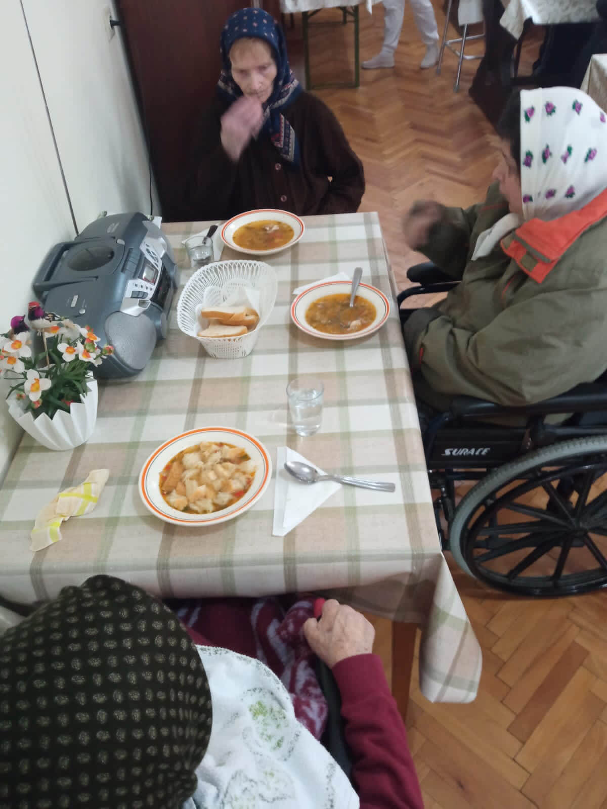
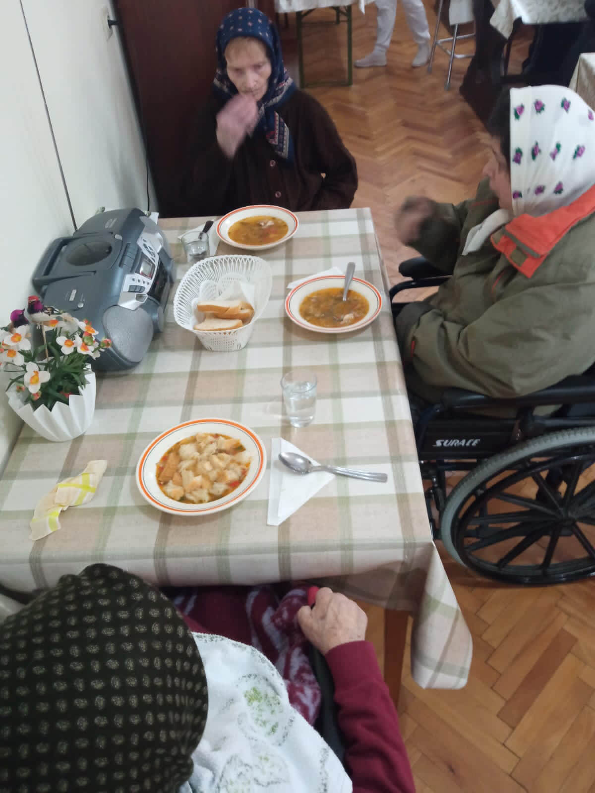
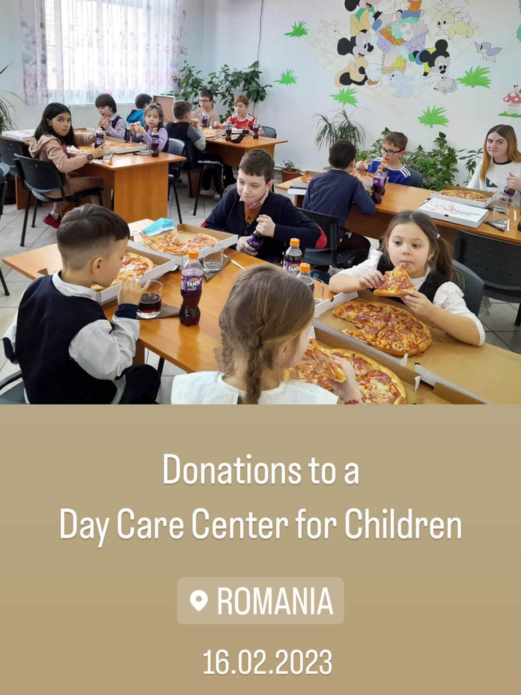
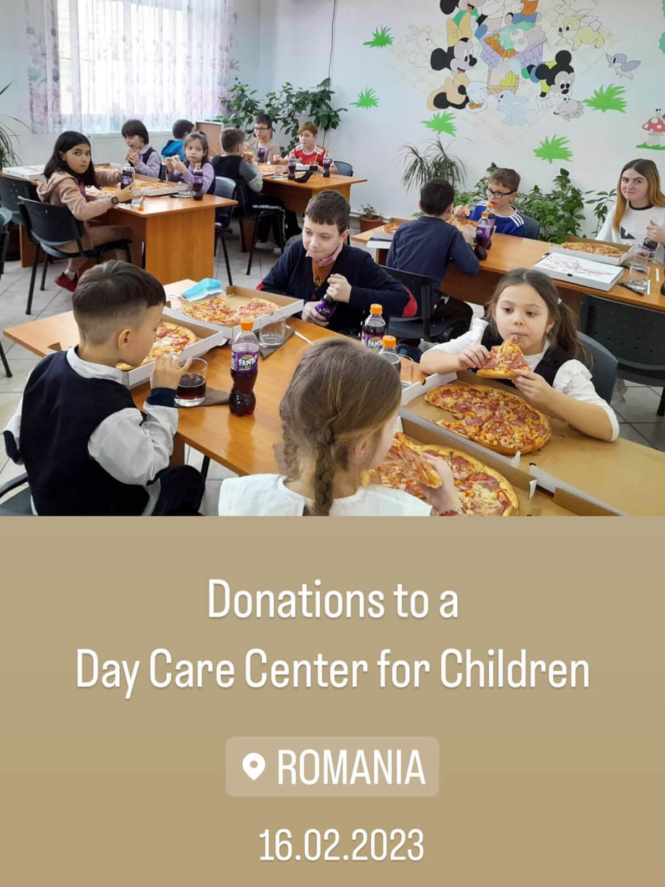

Navon Jobs România: Dedicația noastră față de responsabilitatea socială corporativă
La Navon Jobs România ne angajăm profund să facem o diferență semnificativă în viața celor din jurul nostru. Ghidați de viziunea și compasiunea fondatorului nostru, Georgiana Mart, am stabilit o serie de inițiative de impact care susțin și susțin comunitățile vulnerabile din România și nu numai. Eforturile noastre de Responsabilitate Socială Corporativă (CSR) sunt dedicate furnizării de resurse esențiale, promovării rezilienței și îmbunătățirii bunăstării comunităților pe care le deservim. Iată câteva dintre programele esențiale pe care le susținem cu mândrie:
1. Furnizarea de alimente pentru persoanele în vârstă din România
Data: 07 mai 2023
Recunoaștem că multe persoane în vârstă se confruntă cu insecuritate alimentară și izolare socială. Pentru a aborda această problemă, Navon Jobs a inițiat un program de a oferi mese hrănitoare cetățenilor în vârstă din România. Aceste distribuiri de alimente ne ajută să ne asigurăm că seniorii noștri primesc hrana de care au nevoie și le reamintesc că sunt membri valoroși ai comunității noastre.
Galerie
 



2. Furnizarea de alimente copiilor din România
Data: 16 februarie 2023
În România, mulți copii din familii cu venituri mici se luptă să aibă acces la mese obișnuite. Organizația noastră a lansat inițiative pentru a oferi acestor copii opțiuni alimentare sănătoase, asigurându-se că aceștia au nutriția necesară pentru creșterea și dezvoltarea lor. Acest program își propune să le susțină sănătatea fizică și performanța academică, permițându-le să prospere.
Galerie
 



3. Materiale Educaționale pentru Copii din România
Data: 23 mai 2023
Educația este un drept fundamental și ne angajăm să o facem accesibilă tuturor copiilor. Navon Jobs România donează în mod activ materiale educaționale, cum ar fi cărți, articole de papetărie și rechizite pentru învățare, copiilor care au nevoie. Echipând studenții cu instrumentele de care au nevoie, contribuim la deschiderea drumului către un viitor mai luminos.
Galerie

4. Renovare case pentru familiile sărace din România
Data: 02 februarie 2023
Credem că toată lumea merită un mediu de viață sigur și confortabil. Navon Jobs a întreprins proiecte de renovare a caselor pentru familiile sărace din România, ajutând la repararea și îmbunătățirea locuințelor acestora. Aceste renovări includ reparații esențiale, modernizări și asigurarea faptului că familiile au un loc sigur în care să locuiască.
Galerie

5. Pachete săptămânale cu alimente pentru familiile cu venituri mici din România
Data: 30 iunie 2023
Pentru a combate insecuritatea alimentară în rândul familiilor cu venituri mici, am implementat un program care oferă pachete cu alimente săptămânale. Aceste pachete conțin produse alimentare esențiale pentru a sprijini familiile în nevoile lor zilnice. Asigurând accesul la alimente, ne propunem să ușurăm unele dintre sarcinile financiare cu care se confruntă aceste gospodării.
Galerie


6. Construirea unei Biserici Catolice la Bicaz, România
Navon Jobs România a finanțat cu mândrie construcția unei Biserici Catolice în Bicaz. Acest proiect simbolizează speranța, unitatea și creșterea spirituală pentru comunitatea locală. Biserica servește ca loc de adunare pentru rezidenți și o sursă de sprijin în perioadele de nevoie.
Navon Jobs Bangladesh: Sprijinirea educației și bunăstării comunitare
Sprijin pentru școlile locale din Bangladesh
Navon Jobs este dedicată sprijinirii școlilor locale din Bangladesh prin donații, resurse și proiecte de renovare. Investind în infrastructura educațională, ne străduim să creăm un mediu propice de învățare pentru copii, care să le permită să își atingă întregul potențial.
Navon Jobs Sri Lanka: Susținerea patrimoniului cultural și sprijinul comunității
Donații pentru temple din Sri Lanka
Navon Jobs a făcut donații generoase templelor locale pentru a ajuta la întreținerea și operațiunile acestora. Acest sprijin ajută la conservarea acestor situri culturale importante și asigură că acestea continuă să servească drept punct focal pentru adunările comunitare.
Darul unui înger: Misiunea plină de căldură a unei fetițe de a-i hrăni pe cei care au nevoie în România
Data: 12 octombrie 2024


Ajutând o familie de 11 persoane din Pildești, România
Data: 13 octombrie 2024
La Navon, ne angajăm să îi sprijinim pe cei care au nevoie, iar o inițiativă recentă ne-a impresionat profund. În satul Pildești, România, o familie de 11 persoane se luptă cu resurse limitate și condiții dificile de viață. Văzând rezistența și speranța lor în ciuda șanselor ne-a determinat să intervenim.
Credem în dăruirea comunităților care ne-au modelat. Oferind sprijin esențial acestei familii, sperăm să redăm speranța și să oferim un viitor mai luminos. Fiecare act de bunătate, oricât de mic, face diferența. Împreună, putem continua să-i ridicăm pe cei care au cea mai mare nevoie.
— Georgiana Mart, fondatoare Navon